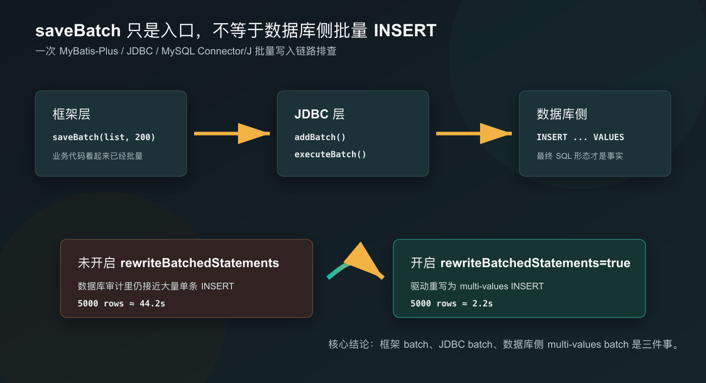

摘要
这次问题的表象是：一个定时任务写入大量报表明细后，数据库触发了长事务和 SQL 审计尖峰。
第一眼看代码，业务已经用了 MyBatis-Plus：
saveBatch(records, 200);这很容易让人产生一个判断：既然已经
saveBatch，批量插入应该没问题了。
但后续 SQL 审计和 A/B 验证证明，事情并没有这么简单。同样插入 5000
条数据，同样使用 saveBatch(list, 200)：
| 场景 | 平均耗时 |
|---|---|
未开启 rewriteBatchedStatements |
约 44.2 秒 |
开启 rewriteBatchedStatements=true |
约 2.2 秒 |
差距大约 20 倍。
最终根因不是业务代码没有调用批量 API，而是 MySQL Connector/J 没有开启批量重写，导致 JDBC batch 没有变成数据库侧真正高效的 multi-values INSERT。
这次排查最重要的收获是：
框架层 batch、JDBC 层 batch、数据库侧 multi-values batch，不是同一件事。1. 问题现象：代码看起来批量了，数据库侧却仍然很忙
某天早上的报表定时任务执行后，数据库监控出现长事务告警。继续看 SQL 审计，可以看到同一个时间窗口内 INSERT 数量明显抬高，主要集中在两类报表明细表。
为了避免暴露内部信息，可以把现象抽象成这样：
06:15 附近，SQL 审计出现明显尖峰
一分钟内审计记录数超过 3 万条
主要 INSERT 集中在报表明细表 A 和报表明细表 B这个现象说明，它不是某一条复杂 SQL 慢，而是短时间内大量写入把事务时间和数据库压力一起推高了。
于是第一步自然是回到代码里看：是不是有人在循环里一条一条
save()？
结果不是。
业务代码里已经用了类似下面的写法：
reportService.saveBatch(reportList, 200);也就是说，从业务代码视角看，开发并没有写最糟糕的循环单条插入。
矛盾就出现了：
代码：saveBatch(list, 200)
审计：仍然像大量单条 INSERT 一样形成尖峰如果排查停在代码层，很容易得出错误结论：既然已经
saveBatch 了，那批量插入就不是问题。
但 SQL 审计不会关心我们调用了什么 API，它只反映数据库最终看到了什么。
2. 关键认知：三层 batch 不是一回事
这次排查真正有价值的地方，不是发现了某个参数，而是把“批量插入”拆开看清楚了。

2.1 框架层 batch
业务代码调用：
saveBatch(list, 200);这是 MyBatis-Plus 提供的批量保存入口。它的价值很明确：业务层不用给每张表手写循环插入，也不用在每个 Service 里维护一套重复 mapper。
但它只能说明：我们进入了框架提供的批量 API。
它不能直接证明：数据库服务端收到的就是一条 multi-values INSERT。
2.2 JDBC 层 batch
MyBatis-Plus 底层会通过 MyBatis/JDBC 执行 batch，大致可以理解为：
preparedStatement.addBatch();
preparedStatement.addBatch();
preparedStatement.addBatch();
preparedStatement.executeBatch();这说明应用和 JDBC 驱动之间确实进入了 batch 语义。
但 JDBC batch 仍然只是客户端和驱动之间的执行方式。驱动最终怎么把这些 batch 发给 MySQL，还取决于驱动实现和连接参数。
2.3 数据库侧 multi-values batch
我们真正希望数据库执行的是这种形态：
INSERT INTO demo_table (id, name, amount)
VALUES
(?, ?, ?),
(?, ?, ?),
(?, ?, ?);而不是这种形态：
INSERT INTO demo_table (id, name, amount) VALUES (?, ?, ?);
INSERT INTO demo_table (id, name, amount) VALUES (?, ?, ?);
INSERT INTO demo_table (id, name, amount) VALUES (?, ?, ?);前者减少了 SQL 解析、网络往返和服务端处理成本，后者即使来自
executeBatch()，在数据库侧仍然可能更接近“大量单条写入”。
所以这次的核心判断是：
saveBatch 说明框架层用了 batch；
executeBatch 说明 JDBC 层用了 batch；
只有最终 SQL 形态才能说明数据库侧是否真的吃到了批量收益。3. 根因：少了 rewriteBatchedStatements=true
排查 JDBC URL 后，发现连接参数里有常见配置，例如字符集、时区等，但没有：
rewriteBatchedStatements=true这个参数是 MySQL Connector/J
的性能扩展配置。按官方文档说明，它会在调用 executeBatch()
时，对 INSERT / REPLACE 这类 PreparedStatement
做批量重写，把它们转换成更高效的 multi-values 形式。该参数默认值是
false。
也就是说，如果没有显式开启它，不能简单假设 JDBC batch 一定会变成数据库侧 multi-values INSERT。
还有一个容易混淆的参数是：
allowMultiQueries=true它允许一条 Statement 中包含多条 SQL，但这不是 JDBC batch rewrite
的开关。把它打开，不等于打开了
rewriteBatchedStatements。
最终根因可以压缩成一句话：
MyBatis-Plus 已经做了 JDBC batch，但 MySQL Connector/J 没有开启批量重写，数据库侧没有获得 multi-values INSERT 的性能收益。4. A/B 验证：只改变一个变量
为了避免直接拿生产报表表做实验，我构造了一个脱敏测试场景：
测试表：batch_insert_test
数据量：5000 条
批大小：200
代码：saveBatch(list, 200)
变量：JDBC URL 是否增加 rewriteBatchedStatements=true关键是只改变一个变量。
这样结果才能归因到 JDBC 参数，而不是机器负载、业务逻辑、索引差异或测试数据不同。
4.1 未开启 rewriteBatchedStatements
三次结果：
A：47139 ms
B：42751 ms
C：42697 ms平均耗时约：
44.2 秒4.2 开启 rewriteBatchedStatements=true
三次结果：
A：1945 ms
B：2738 ms
C：1807 ms平均耗时约：
2.2 秒4.3 结果
44.2 / 2.2 ≈ 20同样的数据量，同样的 saveBatch(list, 200)，只增加一个
JDBC 参数，性能提升约 20 倍。
这说明之前的瓶颈不是业务没有批量，而是批量语义没有在数据库侧充分兑现。
5. 为什么平时体感只是“不丝滑”，不是“完全不可用”
这个问题有个迷惑性：它不一定每天都炸。
原因是业务代码已经避免了最差的写法。它不是这样：
for (Record record : records) {
service.save(record);
}它至少已经通过 saveBatch 进入了 JDBC
batch，所以不会慢到特别离谱。
但因为驱动没有重写成 multi-values INSERT，它也没有达到理想状态。
所以平时的体感可能是：
后端响应不是特别慢，但导入、初始化、报表生成、明细落库，总感觉不够顺。可以粗略理解成：
代码层面从 0 分优化到了 60 分；
驱动参数没开，所以没能到 90 分。这类问题通常会在这些场景集中暴露：
- 报表生成
- Excel 导入
- 初始化数据写入
- 订单/采购/库存明细落库
- 财务分录、余额、流水批量生成
- 定时任务集中写入
但也要说清楚边界：它不会让所有接口都快 20 倍。
直接受益的是基于 JDBC batch 的批量 INSERT 场景。普通查询、单条写入、Redis 调用、远程调用、Java 计算、慢索引查询，都不属于这次优化的收益范围。
6. 为什么不直接给每张表写 XML foreach
看到 multi-values INSERT 后，很多人的第一反应是：那我手写 XML
foreach 不就行了吗？
当然可以，但这不是第一选择。
如果每张表都写一套批量 mapper，会带来几个问题：
每张表都要维护一段批量 SQL
字段变更时 mapper 容易漏改
通用 CRUD 和定制 mapper 并存，维护成本升高
项目里已有大量 saveBatch 调用，逐个替换成本很高
问题本质在驱动层参数，不在每个 Service 的写法更合理的顺序是：
先打开 MySQL Connector/J 官方提供的 batch rewrite 能力，
让现有 saveBatch 调用自动获得收益。只有少数极端场景再考虑定制：
- 超大批量导入，需要
LOAD DATA INFILE - 特殊
ON DUPLICATE KEY UPDATE语义 - 单表瓶颈明确，通用方案仍不足
- 需要特殊分片、临时表或中间表策略
绝大多数业务系统里，先把 JDBC 层能力用对，比到处写定制 SQL 更低成本。
7. 风险边界：这个参数不是不能开，但也不是零风险
rewriteBatchedStatements=true
是官方能力，但上线前仍然要评估边界。
7.1 单批 SQL 包会变大
开启后，多条 INSERT 会被重写成一条 multi-values INSERT。单条 SQL 包会变大。
如果 batchSize 设置得过大，可能碰到：
max_allowed_packet
PacketTooBig
连接异常所以建议不要在同一次上线里同时做两件事：
开启 rewriteBatchedStatements=true
同时把 batchSize 从 200 放大到 2000先保持原有批大小，只改一个变量。
7.2 自增主键回填要单独验证
如果业务强依赖数据库自增 ID 的逐条回填，需要单独验证。
很多企业项目会使用雪花 ID、业务 ID 或应用侧生成主键，这类场景风险相对低一些。但不能因为别的项目没问题，就默认自己也没问题。
7.3 ON DUPLICATE KEY UPDATE 的 update count 语义
MySQL Connector/J
官方文档也提醒，rewriteBatchedStatements=true 和
INSERT ... ON DUPLICATE KEY UPDATE 一起使用时，批量重写后的
affected rows 很难精确映射回每条原始语句。
如果业务依赖每一条 batch item 的更新行数，就不能只看性能，要补充语义验证。
7.4 普通 Statement 的 SQL 注入风险
官方文档还提示，普通 Statement 在输入没有清洗时，批量重写可能扩大 SQL 注入风险。
但典型 MyBatis-Plus saveBatch 使用的是 PreparedStatement
参数绑定，不是字符串拼接
SQL。真正需要警惕的，反而是系统里是否存在手写拼接
SQL、是否全局开启了不必要的多语句执行能力。
8. 推荐上线清单
我的建议是按小步验证，不要把多个优化叠在一起。
短期方案：
JDBC URL 增加 rewriteBatchedStatements=true
保持现有 saveBatch(list, 200)
暂不放大 batchSize
暂不大面积改 XML mapper验证顺序：
- 开发环境完成 A/B 验证。
- 测试环境回归报表、导入、初始化、单据明细等批量 INSERT 场景。
- 检查是否有自增主键回填、
ON DUPLICATE KEY UPDATE、流式字段写入等特殊场景。 - 生产低峰发布。
- 观察慢 SQL、SQL 审计 INSERT 数量、数据库
CPU、主从延迟、
PacketTooBig、连接异常。
验证口径不要只看接口耗时。更重要的是看数据库侧事实：
SQL 审计记录数是否下降？
批量 INSERT 的最终 SQL 形态是否改变？
数据库负载是否下降？
定时任务事务时间是否缩短？9. 这次排查给我的几个提醒
9.1 不要被 API 名字骗了
saveBatch 这个名字很容易让人放松警惕。
但排查性能问题时，不能停在“我调用了批量 API”。还要继续问：
JDBC 驱动怎么执行？
网络往返有没有减少？
数据库审计里是什么形态？
最终 SQL 是单条洪峰，还是 multi-values？9.2 性能排查要看最终事实
这次真正推动问题往下走的是 SQL 审计。
如果只看代码，会觉得已经批量了；如果只看接口耗时，会觉得只是定时任务偏慢；但 SQL 审计能直接告诉我们数据库最终承受了什么。
9.3 A/B 实验要控制变量
这次结果有说服力，是因为固定了这些条件：
同一张表
同一数据量
同一 batchSize
同一 saveBatch 代码
只改变 rewriteBatchedStatements性能优化最怕“顺手又改了几个地方”。一旦变量混在一起，就很难判断到底是谁带来了收益。
9.4 好的优化不一定是多写代码
一开始很容易走向“写 XML foreach”“每张表加批量 mapper”。
但这次更好的方案，是打开 JDBC 驱动已有能力，让系统里现有的批量调用自动收益。
少写代码、少改业务、收益明确、风险可控，这才是更值得优先考虑的优化。
10. 可以直接复用的排查模板
以后再遇到“代码已经批量了，但数据库还是很忙”的问题，可以按这个顺序查：
1. 先看业务代码是不是循环单条写入。
2. 确认是否调用了框架批量 API，例如 saveBatch。
3. 看 JDBC URL 是否开启 rewriteBatchedStatements。
4. 用 SQL 审计或 general log 看最终 SQL 形态。
5. 做 A/B：同代码、同数据量、同 batchSize，只改 JDBC 参数。
6. 评估 max_allowed_packet、自增主键、ON DUPLICATE KEY UPDATE、update count 等边界。
7. 小流量或低峰上线，观察数据库侧指标。这套模板不只适用于 MyBatis-Plus。只要是 Java + MySQL + JDBC batch 的批量写入链路，都值得检查这一层。
结语
这次问题表面上是一次长事务告警，实际上暴露的是一个很常见的抽象泄漏：
框架 API 告诉你“我批量了”；
JDBC 驱动决定“怎么批量”；
数据库审计告诉你“最终到底批没批量”。性能优化不能只相信代码意图，要看最终事实。
saveBatch 没有错，MyBatis-Plus
也没有错。错的是我们把“调用了批量
API”误认为“数据库已经按最高效方式执行”。
下次再看到 saveBatch(list, 200)，可以多问一句：
数据库侧看到的，真的是 multi-values INSERT 吗？参考资料
- MySQL Connector/J Developer Guide：Performance
Extensions，
rewriteBatchedStatements配置说明：https://dev.mysql.com/doc/connector-j/en/connector-j-connp-props-performance-extensions.html - MySQL Connector/J Developer Guide：Configuration Properties，性能扩展属性表：https://dev.mysql.com/doc/connector-j/en/connector-j-reference-configuration-properties.html
- MyBatis-Plus 官方文档：持久层接口与
saveBatch：https://baomidou.com/guides/data-interface/ - MyBatis-Plus 官方文档：批量操作：https://baomidou.com/guides/batch-operation/